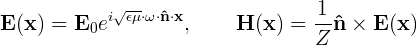
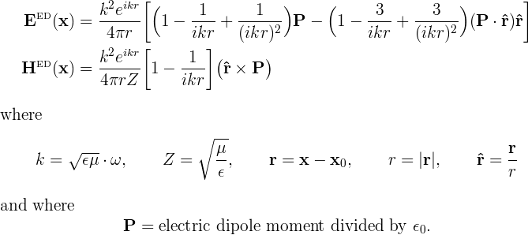

Incident fields in scuff-em
For the classical scattering problems solved by scuff-scatter or by C++ or python codes using the scuff-em API, you will want to specify the incident fields that scatter from your geometry.
The default scuff-em distribution offers three built-in types of incident fields:
It is also easy to define your own custom incident fields for use in API programs.
Plane waves
scuff-scatter command-line syntax:
--pwDirection nx ny nz
--pwPolarization Ex Ey Ez
C++ code:
double nHat[3] = {nx, ny, nz};
cdouble E0[3] = {Ex, Ey, Ez};
PlaneWave *PW=new PlaneWave(E0, nHat);
Selects the incident field to be a plane wave, with propagation vector n=(nx,ny,nz) and E-field polarization vector E=(Ex,Ey,Ez).
More specifically, the fields of a plane wave are

where the components of the vectors
and
are what you specify with the --pwDirection and
--pwPolarization options to scuff-scatter. (The frequency
is specified elsewhere, for example using
command-line options like --omega. The
quantities and are the material properties of
the exterior medium at this frequency, which are determined by
the material property designation you give the external medium
in the .scuffgeo file; the wave impedance of the medium is
in vacuum.)
The values specified for --pwPolarization may be
complex numbers.
As an example, the scuff-scatter command-line options
--pwDirection 0 0 1 --pwPolarization 0.7071 0.7071i 0.0
will specify an incident field consisting of a circularly polarized plane wave traveling in the positive z direction.
Gaussian beams
scuff-scatter command-line syntax:
--gbCenter Cx Cy Cz
--gbDirection nx ny nz
--gbPolarization Ex Ey Ez
--gbWaist W
C++ code:
double X0[3]={Cx, Cy, Cz}; /* beam center point */
double KProp[3]={nx, ny, nz}; /* beam propagation vector */
cdouble E0[3]={Ex, Ey, Ez}; /* complex field-strength vector */
double W0=W; /* beam waist */
GaussianBeam *GB=new GaussianBeam(X0, KProp, E0, W0);
Selects the incident field to be a focused Gaussian beam,
traveling in the direction defined by the unit vector
n=(nx,ny,nz), with E-field polarization
vector E=(Ex,Ey,Ez), beam center point with cartesian
coordinates C=(Cx,Cy,Cz), and beam waist W.
The values specified for --gbPolarization may be
complex numbers.
The scuff-em implementation of the field of a Gaussian laser beam was contributed by Johannes Feist and follows this paper:
- Sheppard and Saghafi, "Electromagnetic Gaussian Beams Beyond the Paraxial Approximation," Journal of the Optical Society of America A 16 1381 (1999), http://dx.doi.org/10.1364/JOSAA.16.001381.
Point sources
scuff-scatter command-line syntax:
--psStrength Px Py Pz
--psLocation xx yy zz
C++ code:
double X0[3] = {xx, yy, zz};
cdouble P0[3] = {Px, Py, Pz};
PointSource *PS=new PointSource(X0, P0);
Selects the incident field to be the field of a pointlike
electric dipole radiator with dipole moment P=(Px,Py,Pz)
and located at cartesian coordinates (xx,yy,zz).
More specifically, the fields of a point source are given by

The values specified for --psStrength may be
complex numbers.
You may define the incident field to be a superposition of
the fields of multiple point sources by specifying these
options more than once. (The nth occurrence of --psStrength
will be paired with the nth occurrence of --psLocation.)
In API codes (but not in scuff-scatter) it is also possible to a define a magnetic point source as follows:
PointSource *PS=new PointSource(X0, P0);
Using incident fields in API programs
Please see here for further details and examples of how incident fields are manipulated in API codes, including an example of how to create your own custom-designed incident field.